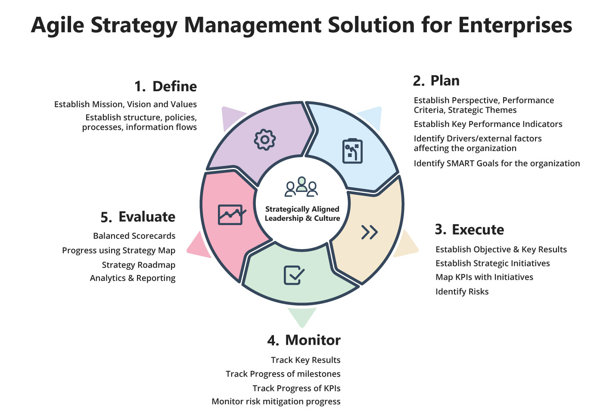

Strategy Development, Execution and Evaluation
Core-Strategy is an enterprise strategy management tool for the modern enterprises. The enterprise strategy management process as defined within Core-Strategy is described below:

FIGURE 2-2 CORE-STRATEGY PROCESS DECOMPOSITION
Step 1. Define
Define - Establish organization mission, vision, and values
Welcome to the first step towards your organization’s strategy management journey. Here you will be establishing your organization profile, declaring the mission, vision, and values. The mission and vision statements play critical roles: (1) communicate the purpose of the organization to stakeholders, (2) inform strategy development, and (3) develop the measurable goals and objectives by which to gauge the success of the organization’s strategy.
Establish Organization Structure
To manage an organization strategically, the organization structure should mimic to the actual hierarchy setup of the origination.
Role Based Access
The Core-Strategy role-based access allows roles to be created independent of the user access, this process simplifies the implementation of establishing a granular level of control that is mapped to the users’ s respective organization hierarchy.
Manage Users and User Hierarchy
Within Core-Strategy when defining an organization, the final step is to invite stakeholders, leaders, and managers to establish their account profile. One the basic information is added (i.e., Name, Email id and organization affiliation) the user gets and invite via email notifications to join the organization profile.
Establish Perspectives
Perspective refers to a category of performance objectives or measures. The default four perspectives of a balanced scorecard are financial data, customer perspective, learning and growth and internal business processes. These four areas, which are also called legs, make up an organizations vision and strategy. A perspective name should be chosen based on the culture of the organization, although the underlying focus typically does not. For example, one organization might use “People and Tools” instead of “Organizational Capacity” (or “Learning and Growth”) Core-Strategy gives total control to its users to add additional perspective if an organization wishes to measure against them.
Performance Criteria
Performance criteria are the expression of what is to be measured and why (i.e., how success is defined). They are the standards against which performance is evaluated and helps assessors maintain objectivity and inform stakeholders about the expectations, giving them a target or goal for which to strive. Performance Criteria can be applied at any level of the organization from manufacturing and delivering good to financial management. Performance Criteria are both quantitative and qualitative types of expectations
Strategic Themes
Strategic themes describe the strategy of an organization in a concise way. They are broad in scope and typically describes what leadership, man agent and stakeholders believe must be done to succeed and achieve the desired outcomes. Strategic Themes usually cut across organizations business and functional units providing boundary-less approach necessary for successful strategy execution.
Key Performance Indicators
Key performance indicators (KPIs) are the vital navigation instruments used by managers to understand whether their business is on a successful voyage or whether it is veering off the prosperous path. The right set of indicators will shine light on performance and highlight areas that need attention. Core-Strategy provides a default set of KPIs which are generally measured against a perspective in todays modern industries. Organization still have an option to delete an existing KPI or create new KPIs which may suite the specific need of their organization.
Step 2. Plan
Strategic Planning is ongoing organizational process that uses institutional knowledge to document organization’s intended direction. This crucial step process is used to prioritize efforts, effectively allocate resources, align stakeholders and employees on the organization’s goals, and ensure those goals are backed by data and sound reasoning. Within Core-Strategy the planning means establishing perspectives for measuring the outcomes, establishing Performance criteria, defining Organization Strategic Themes and Key Performance Indicators
Drivers
An Organization Driver represents an external or internal condition that motivates an organization to define its goals and implement the changes necessary to achieve them. Typically, Organizations have internal and external drivers that influence its strategies.
Goals
Goals are an observable and measurable end result having one or more objectives to be achieved. Goals are typically broad in scope. A SMART goal is used to help guide goal setting. SMART is an acronym that stands for Specific, Measurable, Achievable, Realistic, and timely. Within the Core- Strategy suite, goals are aligned to the Driver, have timelines, performance criteria, priority and desired outcome that is being sought.
Step 3. Execute & Measure
In the implementation phase, all stakeholders (including individuals or teams or organizations) creates objectives or establishes strategic initiatives against the planned goals. All Objectives or Strategic initiatives have specified timelines, assigned responsibility to individuals, prioritize, status of the tasks as well as the expected vs. actual scores. This is where the real action happens within an organization.
Objective and Key Results (OKR)
Objectives and key results (OKR) is a goal-setting framework that helps organizations define objectives and track key results. At the time of implementation, Key results to be achieved at specified periods are properly defined, so that at defined intervals, Key results are measured against an objective, which in- turn provides us the progress we are making on a specific objective, and towards accomplishment of a goal within the organization.
Strategic Initiatives, Milestones, Key Performance Indicators (KPIs), Risks
During the creation of strategic Initiatives/ projects which are setup towards the accomplish of organization goals, regular milestones are created and KPIs are mapped.
Milestones. A milestone is a marker in a project that signifies a change or stage in development. Milestones are powerful components in project management because they show key events and map forward movement in your project plan. The milestones answer the question if we are making progress according to specified timelines.
KPI. The KPIs provides specific measures on various key parameters which need to be measured for the success of that project. These are also measured in regular intervals as needed.
Risks: When creating and monitoring a strategic initiative, leaders need to identify all risks associated with the strategic initiative as well. This is used for risk identification purposes. Later, the current information will be used for risk assessment and risk response strategy.
Step 4. Evaluate
Strategy evaluation is necessary for all sizes and kinds of organizations. Strategy evaluation should initiate managerial questioning of expectations and assumptions, should trigger a review of objectives and values, and should stimulate creativity in generating alternatives and formulating criteria of evaluation.
Balanced Scorecard
The balanced scorecard (BSC) is a strategic planning and management system. Organizations use balanced scorecards to:
- Communicate what they are trying to accomplish
- Align the day-to-day work that everyone is doing with strategy
- Prioritize projects, products, and services
- Measure and monitor progress towards strategic targets
The name “balanced scorecard” comes from the idea of looking at strategic measures in addition to traditional financial measures to get a more “balanced” view of performance.
Strategy RoadMap
A strategy roadmap communicates organization’s vision. It’s a powerful tool for visualizing the key steps to achieving your mission. Championed by senior-level stakeholders, strategic planning roadmaps focus on mission-critical business objectives, and usually emphasize long-term timelines and deadlines.
PESTLE Analysis
PEST Analysis is a simple and widely used tool that helps you analyze the Political, Economic, Socio- Cultural, and Technological changes in your business environment. This helps to understand the “big picture” forces of change that you are exposed to, and, from this, take advantage of the opportunities
Business Intelligence/ Analytics
Core Strategy provides various reports, dashboards and data analysis opportunities for us to evaluate the success of the organizations strategy. It allows us to measure progress based on:
- Key Performance Indicators
- Strategic Themes
- Performance Criteria
- Goals
- Drivers
- Department wise Performance etc.
Enterprise Risk Management
Enterprise Risk Management (ERM) is a top-down, enterprise view of all the significant risks that might impact the strategic objectives of the organization. It is a “top-down” methodology of risk management that calls for leadership-level decision-making. Within the ERM, the responsibility of risk management isn’t placed on individual departments or business units. Instead, the organization’s leadership will assess individual initiative or departments risk from an enterprise-wide lens and set expectations accordingly.
Strategy Tree
A Strategy Tree is a hierarchical diagram that shows the complete strategic management relationship from the organization’s vision to all the objectives and programs in a single diagram.